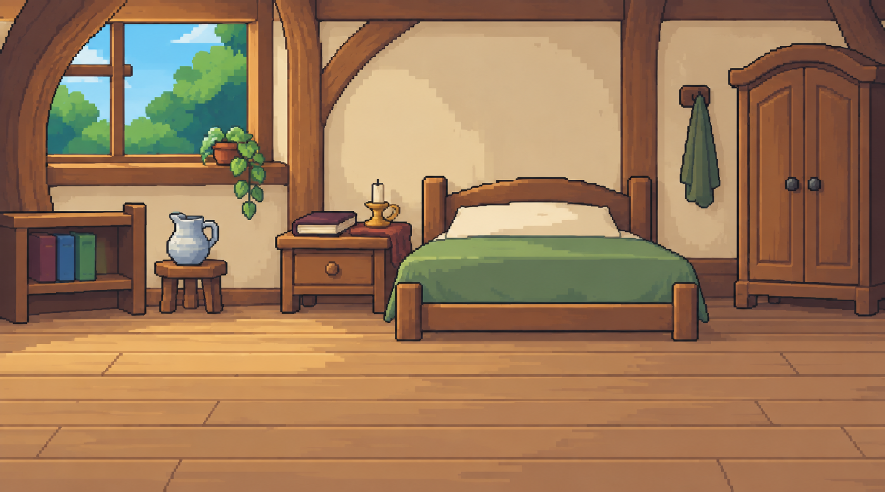

말하지 못한 기록
할아버지 나무 집 · 지하 철창 · 높은 소나무. 남겨진 기록을 찾아가는 배경 세 장입니다.
할아버지 나무 집
정오 무렵

다람과 증거 번호는 미리보기에서만 겹쳐 보입니다. 가까운 두 증거는 번호를 옆으로 옮기고 선으로 실제 위치를 연결했습니다.
개발 전달 자료
그림·증거 좌표 전달 문서 · 파일 규격·좌표·제작 정보 · 이전 B01 배경
가운데를 9:5로 잘라 360×200 게임 화면에 맞춰 표시합니다. 정확한 26색·공통 픽셀 격자는 별도 제작 단계입니다. 실제 게임 적용과 철창 전경 처리는 개발 검토 대상으로 남겨 두었습니다.